library(tidyverse)
library(ggplot2)|
|
Data Visualization
1 오픈데이터 분석 실습 : Data Visualization
1.1 패키지 불러오기
1.2 데이터 불러오기
- mpg (자동차 정보 데이터셋)
mpg %>% head()# A tibble: 6 × 11
manufacturer model displ year cyl trans drv cty hwy fl class
<chr> <chr> <dbl> <int> <int> <chr> <chr> <int> <int> <chr> <chr>
1 audi a4 1.8 1999 4 auto(l5) f 18 29 p compa…
2 audi a4 1.8 1999 4 manual(m5) f 21 29 p compa…
3 audi a4 2 2008 4 manual(m6) f 20 31 p compa…
4 audi a4 2 2008 4 auto(av) f 21 30 p compa…
5 audi a4 2.8 1999 6 auto(l5) f 16 26 p compa…
6 audi a4 2.8 1999 6 manual(m5) f 18 26 p compa…### 차원 파악
mpg %>% dim()[1] 234 111.3 가정
- 엔진이 큰 차는 엔진이 작은 차보다 연료를 더 많이 사용하는가
- displ : 엔진의 크기
- hwy : 연비
1.4 ggplot 생성
- geom_point : 점 찍기
- x축 : 엔진 크기
- y축 : 연비
ggplot(data = mpg) +
geom_point(mapping = aes(x = displ, y = hwy))
### 더 간단한 코드
ggplot(mpg) +
geom_point(aes(displ,hwy))
2 심미적 mapping
2.1 포인트 색상 지정
### class별 색상 지정
table(mpg$class)
2seater compact midsize minivan pickup subcompact suv
5 47 41 11 33 35 62 ggplot(data = mpg) +
geom_point(mapping = aes(x = displ, y = hwy, color = class)) # col='blue' (통일된 색상)
2.2 포인트 사이즈 지정
- 단점 : 구별 어려움
### class 별 크기 지정
ggplot(data = mpg) +
geom_point(mapping = aes(x = displ, y = hwy, size = class))Warning: Using size for a discrete variable is not advised.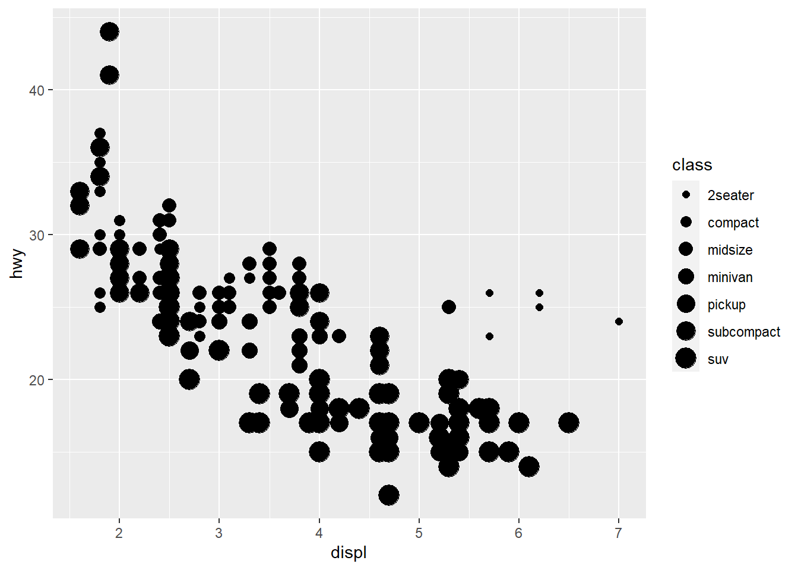
2.3 포인트 투명성 제어
- 단점 : 구별 어려움
ggplot(data = mpg) +
geom_point(mapping = aes(x = displ, y = hwy, alpha = class))Warning: Using alpha for a discrete variable is not advised.
2.4 포인트 모양 변경
- 단점 : 최대 6가지 모양만 보임
ggplot(data = mpg) +
geom_point(mapping = aes(x = displ, y = hwy, shape = class))Warning: The shape palette can deal with a maximum of 6 discrete values because
more than 6 becomes difficult to discriminate; you have 7. Consider
specifying shapes manually if you must have them.Warning: Removed 62 rows containing missing values (`geom_point()`).
3 면
3.1 facet_wrap()
- 패널plot 생성
### class별 2행의 패널
ggplot(data = mpg) +
geom_point(mapping = aes(x = displ, y = hwy)) +
facet_wrap(~ class, nrow = 2)
3.2 facet_grid()
- 두 개 이상의 변수에 대해 그리드형태의 패널plot 생성
table(mpg$drv)
4 f r
103 106 25 table(mpg$cyl)
4 5 6 8
81 4 79 70 ggplot(mpg) +
geom_point(aes(x = displ, y = hwy)) +
facet_grid(drv ~ cyl) # facet 하지 않으려면 변수 대신 마침표 사용가능
4 기하학적 객체
4.1 geom_smooth
- 스무스한 선
### linetype = drv : drv에 따른 라인 구분
ggplot(mpg) +
geom_smooth(aes(x = displ, y = hwy,linetype = drv))`geom_smooth()` using method = 'loess' and formula = 'y ~ x'
### 점, 컬러 추가
ggplot(mpg,aes(x=displ,
y=hwy,
color=drv)) +
geom_point() +
geom_smooth(aes(linetype=drv))`geom_smooth()` using method = 'loess' and formula = 'y ~ x'
### 그룹화만 했을 경우
ggplot(mpg) +
geom_smooth(aes(x=displ, y=hwy, group = drv))`geom_smooth()` using method = 'loess' and formula = 'y ~ x'
### 선 색상으로 구분 + 범례 미표기
ggplot(mpg) +
geom_smooth(aes(x=displ, y=hwy, color = drv),
show.legend = F)`geom_smooth()` using method = 'loess' and formula = 'y ~ x'
### 선/색상/점 모두 구분
ggplot(mpg, aes(x=displ, y=hwy)) +
geom_point(aes(color= class)) +
geom_smooth(aes(linetype = class))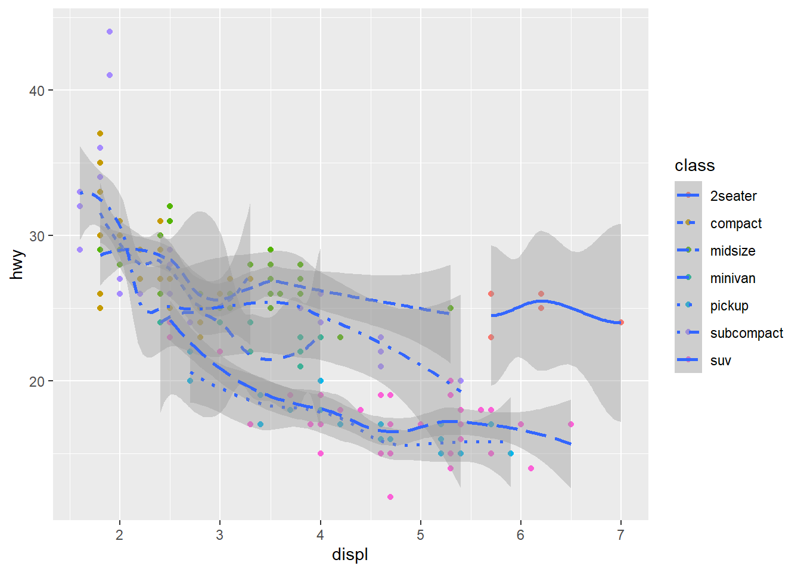
### 특정 데이터 필터링
### se=F : 회귀선의 표준오차 미표시
ggplot(mpg, aes(x=displ, y=hwy)) +
geom_point(aes(color= class)) +
geom_smooth(data = mpg %>% filter(class == 'subcompact'),se=F) `geom_smooth()` using method = 'loess' and formula = 'y ~ x'
5 통계적 변환
5.1 데이터셋 파악
- diamonds
diamonds# A tibble: 53,940 × 10
carat cut color clarity depth table price x y z
<dbl> <ord> <ord> <ord> <dbl> <dbl> <int> <dbl> <dbl> <dbl>
1 0.23 Ideal E SI2 61.5 55 326 3.95 3.98 2.43
2 0.21 Premium E SI1 59.8 61 326 3.89 3.84 2.31
3 0.23 Good E VS1 56.9 65 327 4.05 4.07 2.31
4 0.29 Premium I VS2 62.4 58 334 4.2 4.23 2.63
5 0.31 Good J SI2 63.3 58 335 4.34 4.35 2.75
6 0.24 Very Good J VVS2 62.8 57 336 3.94 3.96 2.48
7 0.24 Very Good I VVS1 62.3 57 336 3.95 3.98 2.47
8 0.26 Very Good H SI1 61.9 55 337 4.07 4.11 2.53
9 0.22 Fair E VS2 65.1 61 337 3.87 3.78 2.49
10 0.23 Very Good H VS1 59.4 61 338 4 4.05 2.39
# … with 53,930 more rows### 특정 컬럼 빈도수
diamonds$cut %>% table().
Fair Good Very Good Premium Ideal
1610 4906 12082 13791 21551 5.2 데이터 시각화
### 특정 컬럼 빈도수 시각화
ggplot(diamonds) +
geom_bar(aes(x=cut)) # stat_count와 동일
5.3 세부 조정
- position
### 막대그래프 색상 조정 color= cut
ggplot(diamonds) +
geom_bar(aes(x=cut, color= cut))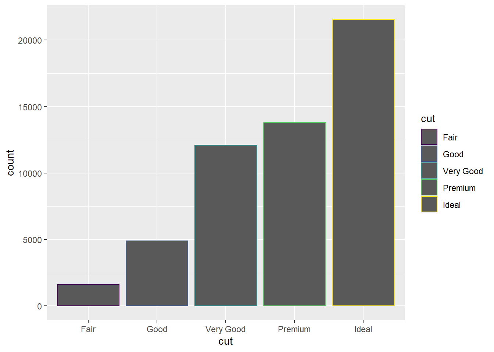
### 막대그래프 색상 조정 fill= cut
ggplot(diamonds) +
geom_bar(aes(x=cut, fill= cut))
### 막대그래프 색상 조정 fill= clarity
### x축에 대해서 색상 조정 가능
ggplot(diamonds) +
geom_bar(aes(x=cut, fill= clarity))
### 투명도 + identity: 막대 안겹치게 포지셔닝
ggplot(diamonds, aes(x=cut, fill=clarity)) +
geom_bar(alpha=1/5, position = "identity")
### 채움색상 NA(투명)
ggplot(diamonds, aes(x=cut, color=clarity)) +
geom_bar(fill=NA, position = "identity")
### fill : 전체높이에 대한 비율 표현 → 상대적 비교 가능
ggplot(diamonds) +
geom_bar(aes(x=cut, fill=clarity), position = "fill")
### dodge : 비교선상의 막대 나란히 배열
ggplot(diamonds) +
geom_bar(aes(x=cut, fill=clarity), position = "dodge")
5.4 Quiz 1
다이아몬드 cut이 Ideal인 다이아몬드 중에서 Clarity가 IF인 비율은 얼마인가?
### 그래프
ggplot(data = diamonds %>% filter(cut == 'Ideal')) +
geom_bar(aes(x=cut, fill=clarity), position = "dodge")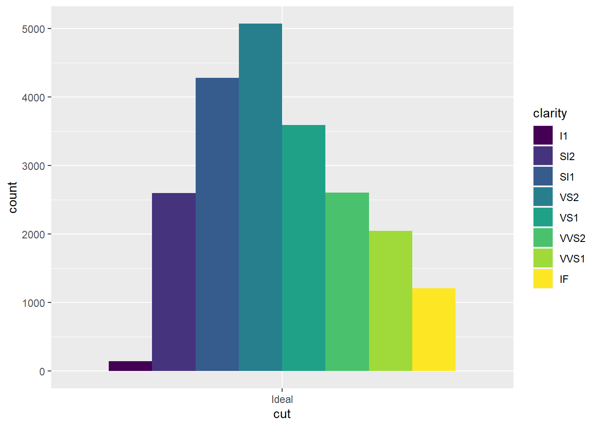
### 다이아몬드 cut이 Ideal인 다이아몬드 중애서 Clarity가 IF인 비율
(diamonds %>% filter(cut == 'Ideal', clarity=="IF") %>% nrow)/(diamonds %>% filter(cut=="Ideal") %>%
nrow)[1] 0.056238695.5 Quiz 2
다이아몬드 cut 등급별로, clarity의 비율이 나오도록 데이터프레임을 가공해봅시다
diamonds %>%
group_by(cut, clarity) %>%
summarize(n=n()) %>%
mutate(total = sum(n), prop = n/total) %>%
select(-n) %>%
pivot_wider(names_from = clarity, values_from = prop)`summarise()` has grouped output by 'cut'. You can override using the `.groups`
argument.# A tibble: 5 × 10
# Groups: cut [5]
cut total I1 SI2 SI1 VS2 VS1 VVS2 VVS1 IF
<ord> <int> <dbl> <dbl> <dbl> <dbl> <dbl> <dbl> <dbl> <dbl>
1 Fair 1610 0.130 0.289 0.253 0.162 0.106 0.0429 0.0106 0.00559
2 Good 4906 0.0196 0.220 0.318 0.199 0.132 0.0583 0.0379 0.0145
3 Very Good 12082 0.00695 0.174 0.268 0.214 0.147 0.102 0.0653 0.0222
4 Premium 13791 0.0149 0.214 0.259 0.243 0.144 0.0631 0.0447 0.0167
5 Ideal 21551 0.00677 0.121 0.199 0.235 0.167 0.121 0.0950 0.0562 5.6 jitter
### jitter : 점 뿌리기
ggplot(mpg) +
geom_point(aes(x=displ, y=hwy), position = 'jitter')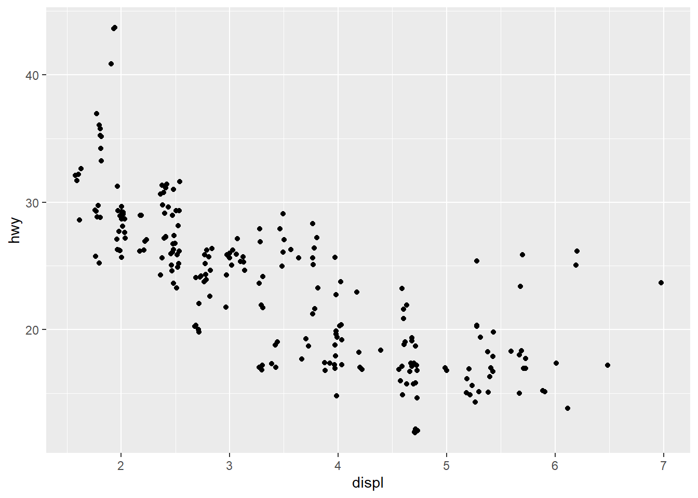
ggplot(mpg) +
geom_jitter(aes(x=displ, y= hwy))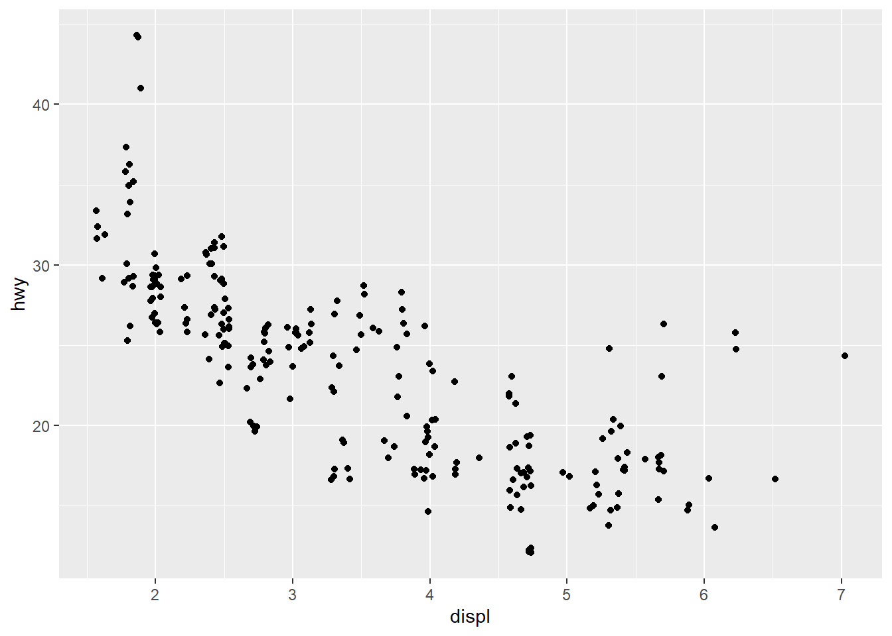
5.7 세부 조정2
- coord
### boxplot
ggplot(mpg) +
geom_boxplot(aes(x=class, y=hwy))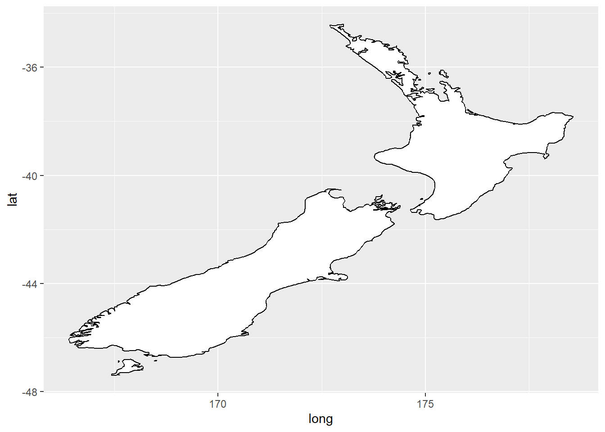
### 색상 지정 가능
ggplot(mpg) +
geom_boxplot(aes(x=class,y=hwy, fill = class))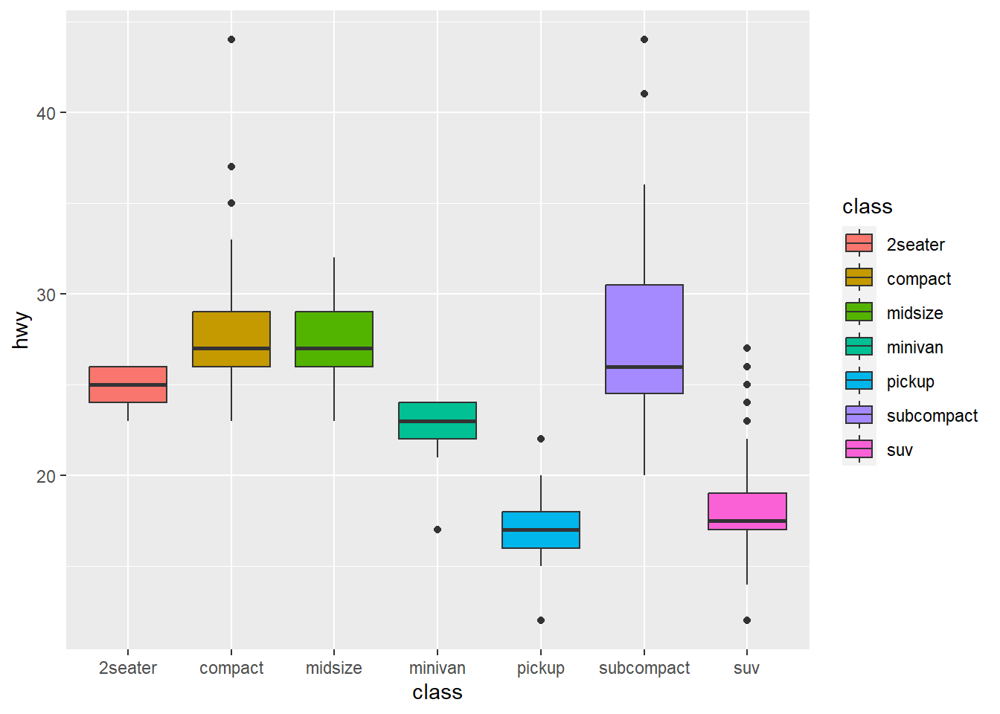
### coord_flip : x축, y축 변경
ggplot(mpg) +
geom_boxplot(aes(x=class, y=hwy)) +
coord_flip()
#install.packages("maps")
library(maps)
Attaching package: 'maps'The following object is masked from 'package:purrr':
map### maps 패키지의 데이터셋 저장/생성
nz <- map_data("nz")
nz %>% head() long lat group order region subregion
1 172.7433 -34.44215 1 1 North.Island <NA>
2 172.7983 -34.45562 1 2 North.Island <NA>
3 172.8528 -34.44846 1 3 North.Island <NA>
4 172.8986 -34.41786 1 4 North.Island <NA>
5 172.9593 -34.42503 1 5 North.Island <NA>
6 173.0184 -34.39895 1 6 North.Island <NA>### geom_polygon : 지도 형식 시각화
ggplot(nz, aes(x=long, y=lat, group=group)) +
geom_polygon(fill="white", color="black")### coord_quickmap : 가로 세율 비율 보존 (정확한 지도)
ggplot(nz, aes(x=long, y=lat, group=group)) +
geom_polygon(fill="white", color="black") +
coord_quickmap()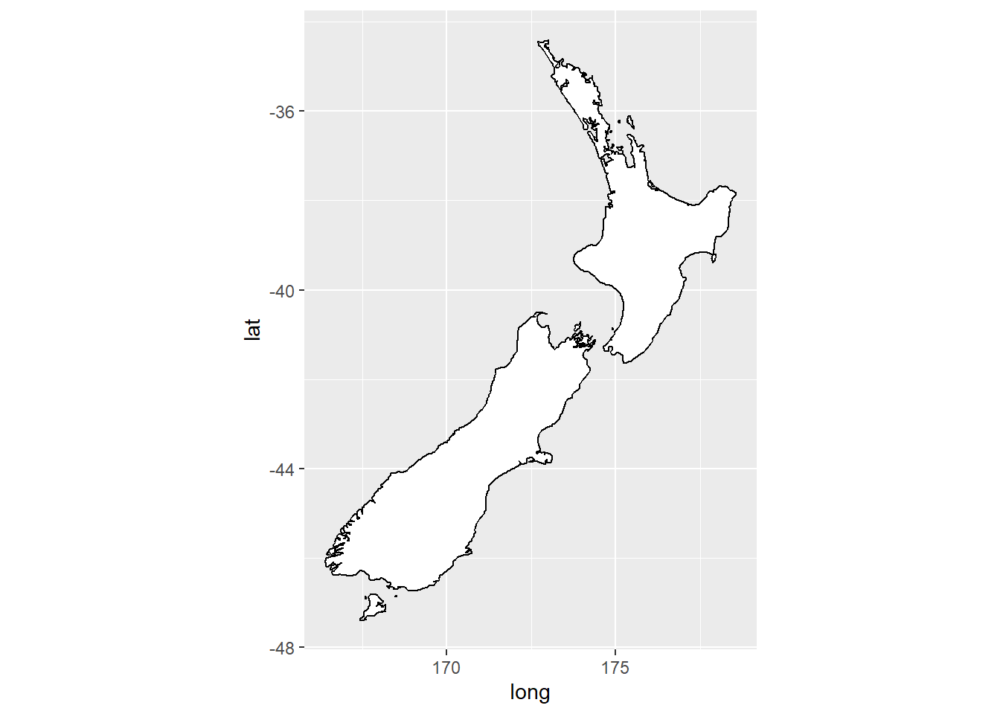
bar <- ggplot(diamonds) +
geom_bar(aes(x=cut, fill=cut),
show.legend = F,
width = 1) +
theme(aspect.ratio = 1) + # 그래프 가로:세로 비율
labs(x=NULL, y=NULL)
bar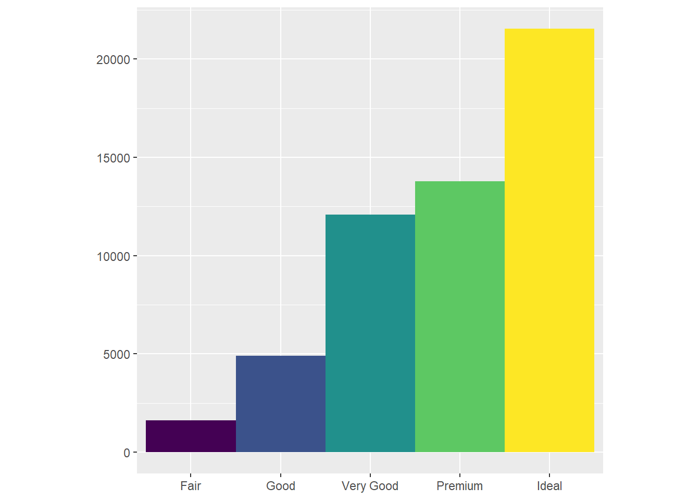
### coord_polar : 원형 막대 그래프
bar + coord_polar()
6 Quiz
- geoom_errorbar
### 차종에 따라서 고속도로에서 연비차이가 날까?
### errorbar로 연비 범위(평균-표준오차, 평균+표준오차) 구하기
mpg %>%
group_by(class) %>%
summarise(mean_hwy = mean(hwy), sd_hwy = sd(hwy)) %>%
ggplot(aes(x=class, y=mean_hwy, fill=class)) +
geom_bar(stat = "identity") +
geom_errorbar(aes(ymin = mean_hwy - sd_hwy, ymax = mean_hwy + sd_hwy),
width = 0.5,
position = position_dodge(width = 0.9),
color = "black")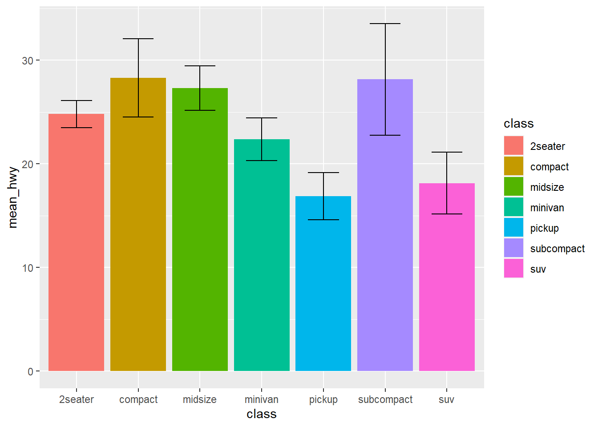